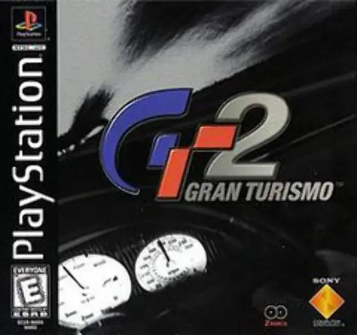

💡 Para jogar em tela cheia, clique no ícone de configurações "↓" no centro do emulador e então "Enter Full Screen"

Gran Turismo 2
PlayStation 1
Desenvolvedora: Polyphony Digital
Editora: Sony Computer Entertainment
Lançamento: 1999
Gênero: Simulador de Corrida
Modos de Jogo: Single-player, Multiplayer (1-2)
O "Real Driving Simulator" definitivo do PS1. Se o primeiro jogo definiu o gênero, este o expandiu ao infinito. Com dois discos separados (Arcade e Simulação), GT2 empurrou o hardware do console ao limite absoluto, trazendo uma quantidade obscena de carros e uma física que ensinou uma geração inteira sobre tração, suspensão e a diferença entre FF, FR e 4WD.
📜 O Modo GT (Carreira)
A jornada clássica: você começa com meros 10.000 créditos. Não dá para comprar uma Ferrari; você vai para a loja de usados comprar um Honda Civic, um Toyota Supra antigo ou um Mazda Miata. O objetivo é vencer corridas de domingo, tirar as infames Carteiras (Licenses) e transformar sua lata velha em uma máquina de corrida de 1000 cavalos.
🎮 Destaques e Jogabilidade
- Garagem Gigantesca: O jogo possui cerca de 650 carros. Diferente do primeiro, que foca em japoneses, GT2 trouxe marcas mundiais como Ford, Chevrolet, Lotus e Mercedes, incluindo clássicos históricos e muscle cars.
- Suzuki Escudo Pikes Peak: O carro mais lendário (e "quebrado") do jogo. Com dois motores e aerofólios gigantes, ele alcançava velocidades absurdas e permitia vencer qualquer coisa (até empinando o nariz), tornando-se o sonho de consumo de todo jogador.
- Modo Rally: Pela primeira vez, o jogo introduziu pistas de terra, exigindo uma pilotagem completamente diferente e pneus específicos para derrapagem na lama.
✨ Fator Replay
GT2 é quase infinito. O desafio de obter Ouro em todas as licenças (especialmente a Super License) é um teste de paciência e habilidade técnica. Além disso, as corridas de Endurance (de até 2 horas reais) e a busca pelo 100% (que curiosamente travava em 98,2% em algumas versões devido a um bug) garantiam meses de jogatina.
Como Salvar
Para salvar seu progresso neste jogo, você pode salvar o arquivo .save usando as opções do emulador que está utilizando. Isso pode ser feito através do ícone 💾 no menu no canto inferior esquerdo da tela. Isso criará um arquivo de salvamento que você poderá carregar 📂 posteriormente para continuar de onde parou.